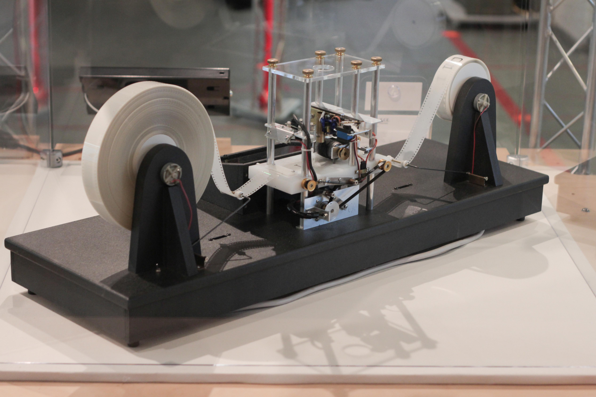

Jonathan Bartlett
The Blyth Institute
Abstract
At the core of engineering is human problem-solving. Creating a cognitive model of the task of problem-solving is helpful for planning and organizing engineering tasks. One possibility rarely considered in modeling cognitive processes is the use of Turing Oracles. Copeland (1998) put forth the possibility that the mind could be viewed as an oracle machine, but he never applied that idea practically. Oracles enable the modeling of processes in the mind which are not computationally based. Using oracles resolves many of the surprising results of computational problem-solving which arise as a result of the Tractable Cognition Thesis and similar mechanistic models of the mind. However, as research into the use of Turing Oracles in problem-solving is new, there are many methodological issues.
In the philosophy of mind, three main overarching theories exist concerning how the mind works—physicalism, dualism, and emergentism. These are ways of understanding cognitive processes in their broadest view. Physicalism is the idea that there is nothing going on in the mind that is not describable through standard physical processes. There may yet be physical processes not currently understood or even known, but, in the long run, there should not be anything involved in causal processes that is not physical and understandable through physics. Some physicalists allow for the non-reduction of mental states to physical states, or at least an epistemological reduction, but they are all clear in the closed causality of the physical (Horgan, 1994).
Dualism is the primary contender for this area. Dualism is the idea that the mind and the body are not equivalent—that there exists at least some part of human cognition that is beyond what is describable by physics or using physical entities. It holds that a reduction of the mind to brain physics does not capture the entirety of what the mind is doing. It also says that there is a causal element being left out—that the mind, while not itself entirely physical, participates in the causal chain of human action. In other words, it is not a purely passive element but has a causal role (Heart, 1994).
A third theory is emergentism. Emergentism tries to split the line between physicalism and dualism. However, it is a very fluid term and is difficult to distinctly identify. Some forms of emergentism (especially “weak emergence” or “epistemological emergence”) are essentially physicalism, while others (for instance, “strong emergence” or “ontological emergence”) propose outside laws of emergence which transform the character of initial properties in certain configurations (O’Connor & Wong, 2012). Therefore, strong emergence tends to be essentially a form of dualism except that the dualistic properties are captured in a set of laws of emergence. The question then is whether these laws themselves can be considered material. Since the question posed in this study concerns whether or not physical causation is sufficient for an explanation, most views of emergence can be classified as either physicalist or dualist.
Historically, aspects of cognition that were considered to be part of the non-physical mind were left unmodeled by dualists. By contrast, the goal of physicalism is to force all phenomena into explicitly physical models, a process not easily accomplished.
To begin with, defining physicalism and dualism are not easy tasks. For a dualist to say that there is more than one mode of causation, at least one of those modes needs to be clearly and explicitly described. Similarly, if a physicalist says that all causes are physical, such a statement is meaningless without a solid definition of what counts as physical and what does not (Stoljar, 2009).
Several insufficient definitions of physicalism are often suggested. For example, one definition is that physicalism deals only with material causes. However, no clear explanation is given as to what counts as a material cause. Another definition is that physicalism deals only with observable phenomena. This could have two meanings, both of which are problematic. If it means that it deals only with things which can be observed directly, then this would remove most of modern physics from the physical—direct observation is not possible for atoms, molecules, forces, and the like. If, on the other hand, the definition includes indirect observations, then there is no reason to suppose that only physical entities are observable. It is precisely the contention of the dualists that there are non-physical modes of causation which have real effects in the world. If dualism is true, then non-physical causes should be indirectly observable. Therefore, observability can’t be a distinguishing factor. A third definition is that physical things are testable. However, this fails for the same reason that the observable definition fails. Testing simply means looking at observations, and determining whether or not they match the expectations of the theory. Therefore, any observable phenomena should be testable in the same way.
One distinguishing factor proposed by physicalists to distinguish between physical and non-physical behavior is computability. With computability, physical processes are those whose results can (at least in theory) be calculated by computational systems, while non-physical processes are those which cannot. This has been proposed by Iris van Rooij in his Tractable Cognition Thesis as well as Stephen Wolfram in his Principle of Computational Equivalence (van Rooij, 2008; Wolfram, 2002). By using this well-defined theory of computability and incomputability, developed in the early 20th century by Gödel, Church, Turing, and others, it becomes at least possible to make meaningful statements about physical and non-physical processes. In addition, because of the groundwork laid by the same pioneers of computability and incomputability, further advances can be made beyond previous dualist conceptions of the mind which actually include non-physical elements in models of cognition.
Incomputability generally refers to the question of whether or not a given function can be computed given a set of operators. So, for instance, given only the addition, subtraction, and summation operators, division cannot be computed. However, given those same operators, a multiplication function can be computed.
One place where incomputability reigns is on self-referential questions. There are numerous questions that can be asked about a set of mathematical operators which cannot be answered solely by the functions of the operators themselves. For example, let’s say you have a set of operators (O) and a list (L) of all of the valid functions that take a single value as a parameter, yield a single value as a result, are of finite length, and can be defined using the operators in O, listed in alphabetic order. This is a countable infinity because each function in L can be identified by an ordinal number, which is its index into the list. Now, because all of L are valid functions, there exists a function F(x) which takes the function from L at index x and yields the value of that function with x as the parameter. The question is, is F(x) in L?
The answer, perhaps surprisingly, is no. This means that defining F(x) will require operators not in O. Another example will help demonstrate why. Take another function, G(x), which returns F(x) + 1. If F(x) is in L, then, G(x) is also in L (assuming that the addition operator is in O). If G(x) is at index n of L and has a result r when computed using its own index (which is defined as n), by definition, since n is the index of G, then F(n) must return the same result as G(n), which we have defined to be r. However, the definition of G(x) says that it must be F(x) + 1! Since F(n) returns r and G(n) returns r, this leads to a contradiction, because r cannot be equal to r + 1. Therefore, F(x) cannot be computed using the operators in O. This proof is quite independent of what operators exist in O, provided they are singly valued and include the addition operator. Thus, F(x) is a true function of x but is incomputable with fixed-length programs of operators in O.
Using the example given above, it seems that computability questions are based on the set of operators being used to define it. This is largely true. So, if computability is operator-dependent, how can it help answer questions about the physicality of the process? The Church-Turing thesis provides a solution, stating that all finitary mathematical systems are computationally equivalent to some Turing machine (Turing, 1937, 1939).1

The Church-Turing thesis was discovered when several finitary logic systems were developed independently, including Church’s lambda calculus (Church, 1936; Turing, 1937). It is hard to imagine two systems so different in approach as Church’s lambda calculus and the Turing machine. Yet, in the end, it was proven that they have the exact same computational abilities. To be technically correct, especially with Turing machines, it is their maximum abilities which are equivalent. A Turing machine can be defined with equivalent or less computational power than the lambda calculus, but not with more. Thus, the computational power of finitary systems do imply a fixed set of operators.
Such finitary systems which have this maximal computational power are known as universal machines, or universal computation systems, since they can be programmed to perform any calculation that is possible on a finitary computation system. Thus, any computability question that would be true for one of them would be true for all of them. Therefore, when used without qualification, incomputability usually refers to something which is incomputable on a universal computation system.
Wolfram and van Rooij both use universal computation to set a maximal level of sophistication available in nature. Wolfram explains his Principle of Computational Equivalence: One might have assumed that among different processes there would be a vast range of different levels of computational sophistication. But the remarkable assertion that the Principle of Computational Equivalence makes is that in practice this is not the case, and that instead there is essentially just one highest level of computational sophistication, and this is achieved by almost all processes that do not seem obviously simple . . . For the essence of this phenomenon is that it is possible to construct universal systems that can perform essentially any computation—and which must therefore all in a sense be capable of exhibiting the highest level of computational sophistication (Wolfram, 2002, p. 717). Wolfram is thus stating that within nature, computability is the limiting factor of what is possible. Van Rooij, while restricting his comments to the nature of the mind, makes basically the same point: Human cognitive capacities are constrained by computational tractability. This thesis, if true, serves cognitive psychology by constraining the space of computational-level theories of cognition. (van Rooij, 2008, p. 939) In other words, if the brain is constrained by computational tractability, then it limits the possible set of models which could be used when modeling cognition. Van Rooij specifically traces this back to the idea that the Church-Turing thesis is not merely a limitation of finitary computation, but is a limitation of reality as a whole, or, as van Rooij puts it, “The Church-Turing Thesis is a hypothesis about the state of the world” (van Rooij, 2008, p. 943). Wolfram similarly applies his ideas specifically to the brain, saying: So what about computations that we perform abstractly with computers or in our brains? Can these perhaps be more sophisticated? Presumably they cannot, at least if we want actual results, and not just generalities. For if a computation is to be carried out explicitly, then it must ultimately be implemented as a physical process, and must therefore be subject to the same limitations as any such process (Wolfram, 2002, p. 721). Thus, physicalism, when defined sufficiently to distinguish it from anything else, has been defined by its supporters as being equivalent to computationalism. This allows a more methodical examination of physicalism and dualism to determine which is likely to be true.
One of the classic unsolvable problems in computability is the “halting problem.” In universal computation systems, there are ways to cause computations to repeat themselves. However, this leads to a possible problem—if a function is poorly written, the function may get caught in a repetitive portion and not be able to leave. This computation would be a non-halter, and therefore, left to itself, would never complete. Most familiar computations are halting computations, as demonstrated in the following computer program. All programming examples are given in JavaScript for readability.
This program defines a function called double which obviously doubles its input. It creates a temporary variable called y to hold the result of the computation and then returns y as the final value for the function. So, after defining it, the function can be used by saying double(4) which would give 8, or double(z) which would take the value currently denoted by z and return whatever is double of z.
The next example will demonstrate the operation of a loop. This program computes the factorial of a number which is the result of multiplying a number by all of the numbers below it down to 1. For instance, factorial(5) is 5 * 4 * 3 * 2 * 1. factorial(3) is 3 * 2 * 1. So, the number of computations performed, while always finite for a finite number, varies with the value given. A typical way to program a factorial function follows:
This function defines two temporary variables—val, which holds the present state of the computation, and multiplier, which holds the next number that needs to be multiplied. Unlike algebraic systems, in most computer programming languages, variables do not have static values but can change over the course of the program. The = is not an algebraic relationship, but rather it means assignment (e.g., val = 1 means that the value 1 is being assigned to the variable val).
In this program, the value of multiplier is set to the number given. Then the computation enters the loop. The while command tells the computer that while the value in the multiplier variable is greater than 1, it should perform the given computation contained in the curly braces. For example, if the function is performed with the value of 3, multiplier will be assigned the value 3, which is greater than 1. Then the computation within the while loop will be performed—it will multiply val (which starts off at 1) with multiplier (which is currently 3), and then assign that result back into val. val now has the number 3. multiplier is then decreased by one, and now has the value 2. The bracket indicates the end of the loop computation, so the condition is re-evaluated. multiplier’s value of 2 is still greater than one, so we perform the loop again. val (which is now 3) is multiplied by multiplier (which is now 2) and the value (6) is assigned back into val. multiplier is again decreased and is now 1. Now that the computation is at the end of the loop, the condition will be evaluated again, and this time multiplier is no longer greater than 1. Because the condition is no longer true, the loop does not run again, and the computation process goes on to the next statement.
The next statement returns the value in val as the result of the entire computation. Thus, since val currently holds 6, this function returns 6 as the result of factorial(3), which is the correct result. Since it does eventually return a value, it is considered a halting program. It will take longer to return a value if the input is bigger (since it has to run the loop computation process more times), and it will return invalid values if the input is less than one (or not an integer), but it will always return a value. Therefore, since it will always complete in a finite number of steps, it is a halter.
If the programmer writing this function forgot a step (e.g., to write the instruction that decreases multiplier), then instead of the previous program, the program might read as follows:
In this example, since multiplier is never decreased, then, for any input greater than 1, this function will never stop computing! Therefore, in terms of the halting problem, it doesn’t halt.
Functions on universal computation systems are convertible to numbers. In fact, that’s how computers work—the computer stores the program as a very large number. One example of how this can work is that each character in the above program can be converted to a fixed-size number and then joined together to a large number to denote the program. And this is, in fact, how some programming languages function. Most of the time, however, the conversion of a program into a number actually works by doing a more intensive conversion of the program into a numeric language that the computer understands.
Nonetheless, in each case, the program gets converted into a (usually very large) number. Therefore, since any program can be converted into a counting number, there are only a countably infinite number of possible programs. But more importantly, it means that this program, since it is (or can be represented by) a number, can itself be an input to a function!
Some functions halt on certain inputs, but do not halt on other inputs. The halting question can only be asked on a combination of both the program and the input since some inputs may halt, and others may not. Therefore, the halting problem is a function of two variables—the program p and the input i. Every program/input combination either will halt, or it will not. There is no in-between state possible on finitary computations. Therefore, H(p,i) can be denoted as a function which takes the program p and input i and gives as a result a 1 if p(i) halts, or a 0 if p(i) does not halt. This is known as a “decision problem”—a problem which takes inputs and decides if the inputs have a particular feature or match a given pattern. Interestingly, the program H(p,i) cannot be formed using a universal computation system. This can be proved similarly to the early proof of incomputability.
To test this, first it must be assumed that H(p,i) is a program that can be implemented with a universal computation system. If H(p,i) can be implemented, then it can also be used by a longer program. A program which does this, N(p), is described below:
This function starts by evaluating the halting problem of its input, p, given itself as the value. If the halting problem of a program p with itself as the input says “Yes it halts” (i.e., it gives a value of 1), an infinite loop (i.e., a computation which does not halt) will be performed. If not, the computation should return a value of 1, completing the computation (i.e., the program will halt with that value). One can ask the question, does N(N) halt? If it does, then this program will loop forever, but it can’t, because it has already been determined that it does not halt! Hence, a contradiction. Likewise the reverse. If N(N) does not halt, then N(N) will halt. Therefore, H(p,i) cannot be solved using a universal computation system.
This process may seem like an equivocation on the nature of the functions being described since all of the programs so far have a single input while H(p,i) has two inputs. However, any number of inputs can be encoded onto a single input using delimiters. Therefore, specifying multiple inputs is just an easier way to write out the function than the required steps for encapsulating the inputs together into a single value.
Turing recognized that although the value of H(p,i) was not computable, it was in fact a true function of its variables—that is, for every input set, it yielded a single output. Thus, the halting problem was a hard problem—it had a solution, but not one that was determinable through finitary computation. Some important questions arose from this. Might there be other problems which are harder? Might there be problems which require the solution to the halting problem to figure out? If so, how does one go about reasoning about the computational difficulty of an unsolvable problem? The answer is in Turing Oracles.
A Turing Oracle (hereafter oracle) is a black-box function (i.e., no implementation description is given) which solves an incomputable function and yields its answer in a single step. An oracle machine is a combination of a normal computational system which also has access to an oracle. If the oracle is well-defined in its abilities, it can be used to reason about the process even if the process as a whole is incomputable. An oracle machine, then, is a regular machine (i.e., a normal computable function) which is connected to an oracle (i.e., the function has access to an operation which is incomputable).
Alan Turing describes the oracle machine as follows:
Let us suppose that we are supplied with some unspecified means of solving number theoretic problems; a kind of oracle as it were. We will not go any further into the nature of this oracle than to say that it cannot be a machine. With the help of the oracle we could form a new kind of machine (call them o-machines), having as one of its fundamental processes that of solving a given number theoretic problem. (Turing, 1939, §4) Even though the values of functions based on oracle machines cannot be computed (since they are by definition incomputable), it is still possible to reason about which problems are reducible to oracles and which oracles they are reducible to. Posed another way, if a programmer had an oracle for a given problem, what other problems could be solved? For instance, there is an incomputable function called Rado’s Sigma Function (affectionately known as the “busy beaver” function). This function says, given n, what is the longest non-infinite output of any program of size n? This is an incomputable function, but it can be shown to be computable given an oracle for H(p,i). If dualism is true, then at least some aspects of human cognition are not computable. However, given the discussion above, even if human cognition is partially incomputable, cognition may be at least representable if oracles are included in the allowable set of operations. Several researchers have previously discussed the possibility that the human mind may be an oracle machine (i.e., Copeland, 1998). However, none of them have suggested including oracles as a standard part of cognitive modeling, or how one might apply oracles to cognitive modeling (Bartlett, 2010a,b). The goal of this paper is to present the concept of modeling cognition via oracle machines and its application to a model of human problem-solving on insight problems.
Incomputable functions are unpredictably sensitive to initial conditions. In other words, there is no way to computably predict ahead of time the difference in behavior of the function from the differences in changes to the initial conditions. If this were possible, they would by definition not be incomputable! However, partial solutions to these functions can be made by incorporating additional axioms.
An axiom is a truth that is pre-computational. In other words, it is a truth about computation rather than a result of computation. Chaitin has shown that additional axioms can be used to make partial solutions of incomputable functions (Chaitin, 1982). For instance, if God were to say that there are 30 programs less than size n that halt for a given programming language, then that fact could be used to determine exactly which of those programs were the ones that halt. This is not a complete solution, but rather a partial solution. Nonetheless, it is a solution larger than what was originally determinable without the additional axiom.
Now, most axioms do not come in this form, but instead state that programs that have a certain pattern of state changes will never halt. This would not generate an exclusive list, but the list of additional programs that would be known non-halters through this axiom may be infinitely large. Therefore, by adding axioms, one could potentially be adding infinite subsets of solutions to incomputable problems. Axiom addition is also by definition non-algorithmic, for if axioms could be added algorithmically, then the halting problem would be solvable. Since this is not the case, axiom addition is not an algorithmic endeavor.
Once an axiom is known, however, then the computation of halters and non-halters for which sufficient axioms are known becomes an algorithmic problem. Therefore, the discovery of new axioms converts subsets of problems from non-algorithmic to algorithmic forms.
The next step after investigating computability theory is to relate this theory to problems in cognitive science—namely problem-solving for insight problems. Cognitive science usually breaks problem-solving into two broad categories—analysis problems and insight problems. Analysis problem are problems which can be solved using a known algorithm or set of known heuristics and are usually characterized by the subject being aware of how close he is to solving the problem, the benefits of continuous effort, and the use of pre-existing ideas to solve the problem. Insight problems, on the other hand, are problems which require a reconceptualization of the process in order to solve them (Chronicle et al., 2004).
An example of a classic insight problem is the nine-dot problem. In short, the problem is to take a 3x3 square of dots, and draw four lines that connect every dot without picking up the pencil. In order to solve the puzzle, the person must realize that the solution is to extend one of the lines beyond the confines of the box, and make a “non-dot turn.” This reconceptualization of the problem is rare, the subject cannot gauge his or her own progress, and continuous effort is usually not as helpful as taking breaks.
Insight problems like these have significant structural similarity with incomputable functions. Incomputable functions can be partially solved through adding axioms to the mix. Axioms function a bit like reconceptualizations—they allow the problem to be worked from a different angle using a different approach. Because axioms cannot be generated algorithmically, it is difficult to conclude how close the solution is. Likewise, because the person is not following an algorithm (which is impossible for generating an axiom), continuous effort along the same path is not likely to be helpful.
Research on the nine-dot problem has shown that training on certain ideas such as non-dot turns in similar problems produces an increased success rate in solving the problem (Kershaw & Ohlsson, 2001; Kershaw, 2004). This effectively mirrors the way axioms function in mathematical problem-solving—by increasing the number of axioms available to the subject, experimenters were able to greatly reduce the difficulty of the nine-dot problem for participants.
Because it is mathematically impossible for a person to take an algorithmic approach to the general halting problem, it cannot be classed as an analysis problem. Because of this and its many similarities with other insight problems, the halting problem should be classified as an insight problem. As such, the discoveries that are made for how humans solve the halting problem will help formulate more generally a theory of human insight.
As mentioned previously, if humans are able to solve incomputable functions, then the physicalism hypothesis is false.2 The halting problem makes a good test case for this idea because it is one of the most widely studied class of incomputable problems on both a theoretical and a practical level.
Software development provides the first piece of insight into the process. In software development, humans have to develop software programs on universal computation systems, and those programs must halt. If they do not, their programs will be broken. Therefore, they must solve problems on at least some subset of the halting problem in order to accomplish their tasks. In addition, the problems that they are given to solve are not of their own design, so it is not a selection bias. It is simply not true that programmers are only choosing the programs to solve based on their intrinsic abilities to solve them because someone else (usually someone without the computational background needed to know the difference) is assigning the programs. In addition, it is incorrect to assert that programmers are working around their inabilities to solve certain types of halting problems, because, while the programmer might add some extrinsic complexity to a program, the complexity of the problem itself has an intrinsic minimum complexity regarding a given programming language. Likewise, simply writing it in another language does not help, because there exists a finite-sized transformer from any language to any other language, so being able to solve it in one language is de facto evidence of being able to solve it in another.
One may then conclude from the experience of the process of programming that significant evidence exists that humans are able to at least solve a similar problem to the halting problem. However, there are some important caveats.
A minor caveat is that machines in real life do not exhibit true universal computation as defined in the abstract. Universal computation systems have an infinite memory and can run forever without breaking down. However, there are two primary reasons why this is relatively unimportant to this discussion. The first is that even with fixed-size memory, the halting problem is still practically intractable. That is, the reason why fixed-size memories allow the halting problem to be solved is that a programmer could do an exhaustive search of machine states to determine if the machine state contains cycles (i.e., two exactly equivalent machine states) before halting. If so, then the program will halt. However, calculating the result of the halting problem even using finite-sized memory would require either enormous amounts of time or memory, on the order of 2n, where n is the number of bits in memory.3 In addition, the reasoning usually given by programmers as to why something should not halt is more similar to a proof than to an exhaustive set of attempts. If humans are regularly solving the halting problem for a large number of programs, then it is not because they are being aided by fixed-size computer memories.
The main caveat is that there exist programs (even very short programs) for which humans have not solved the halting problem. Many open problems in number theory can be quite simply converted into a halting problem so that the answer to the problem can be solved by knowing whether or not a given computation will halt. If humans have immediate access to a halting problem oracle, why do these programs give such trouble?
As an example, a perfect number is a number which is equal to the sum of its divisors excluding itself. For instance, 6 is a perfect number because 1, 2, and 3 are all divisors, and they add up to 6. It is not known if there are any odd perfect numbers. A program could be written to search and find an odd perfect number, and halt if it finds one. Such a program can be fairly simply expressed as:
Therefore, if the above program halts, then there is an odd perfect number. If it does not halt, then there is not one. However, no human currently knows the answer to this question. Therefore, whatever it is that humans are doing, it is not directly knowing the answer to the halting problem.
Will humans ever be able to solve this problem? If humans possessed the same limitations on computation as computers, then they would never be able to solve this (and many other) problems. However, math and science, as disciplines, assume that unknown problems with definite answers will eventually be knowable. Simply stated, the progress of science depends on the ability of humans to eventually solve such problems as these.
In other words, if this is a fundamental limitation of humans, then the search for more and more mathematical truths may be madness—they will never be known. This has led some theorists such as Gregory Chaitin to suppose that theorists should, in some cases, simply assume the truth or falsity of some claims as axioms, even in absence of proofs of their truth (Chaitin, 2006). This seems to be a dangerous road to travel. Chaitin uses the fact that different geometries can be made from different axioms about the nature of the world to justify the arbitrariness of choosing axioms. In the case of geometry, for instance, the two different answers to the question of whether parallel lines can intersect generates two different geometries. However, choosing axiomatic truths for geometry is different than finding axiomatic truths for solving incomputable problems such as the halting problem, because in the former the axiom is unconstrained within the system and in the latter it is constrained but unprovable within the system. If an axiom is unconstrained, then given the remaining axioms, a fully consistent system can be maintained with either choice of axiom. In other words, either axiom is equally consistent with the remaining axioms. If an axiom is constrained but unprovable, then the truthfulness of an axiom is dependent on the remaining axioms. In other words, one axiom is true and another is false given the remaining axioms. In the case of reasoning about the halting problem, programmers are dealing entirely with constrained but unprovable axioms. It might be a worthwhile endeavor to provisionally accept an axiom and see where it leads, but it is dangerous to include a provisionally accepted axiom on equal ground with other types of axioms in formal mathematics.
Another option, however, is that humans are able to incrementally arrive at solutions to halting problems. This would mean that humans have access to an oracle which is more powerful than finitary computational systems, but less powerful than a halting oracle.
Selmer Bringsjord has argued for the mind being hyper-computational on the basis of his research into human ability to solve the halting problem. His group claims that they could always determine the halting problem for Turing machines of size n if they took into account the determination of the halting problem for Turing machines of size n - 1 (Bringsjord, Kellet, Shilliday, & Taylor, 2006).
Bringsjord’s group has considerable experience with the halting problem, but it is impossible to tell if his formulation is completely true based on the size of the problem space when n goes beyond 4—there are then too many programs for humans to analyze (when n is 5, there are 63,403,380,965,376 programs). What he found, though, is that his group could formulate halting proofs for programs of size n based on previous patterns which were identified for size n - 1. They used the proofs that they made for size n - 1 as a basis for the proofs in programs of size n. This is itself an interesting result, though it is hard to say that these are necessarily based on program size, since there is nothing in the halting problem that is program-size dependent. A better interpretation is that the proofs were built by introducing constrained axioms. The larger programs utilized the axioms introduced in smaller programs, but potentially required more axioms to solve. Therefore, the proofs utilized the smaller programs because they utilized the axioms demonstrated there. As the programs became larger, the number of axioms required to determine a solution also grew.
This explanation actually fits surprisingly well—it is non-algorithmic (it is determining unprovable axioms), it is incremental (each axiom gives more explanatory power), and it is weaker than a halting oracle.
To put this more formally, let’s define some values:
From these definitions human insight can be described by the following oracle:
|
| (1) |
In other words, if a human is given a decision problem over a certain input, and he or she knows all of the axioms needed to solve the problem except one, then human insight will reveal the remaining axiom. If true, this would explain why insight is both incremental and non-computational. It goes beyond what is available to computation, but still has prerequisites. In this proposal, all axioms are known except one. Thus, in the case of finding odd perfect numbers, the problem of finding the solution to the problem is that there are not enough pre-existing axioms to infer the final axiom.
The main problem with the description as stated is that there are different kinds of axioms, yet there is insufficient mathematical theory (at least known to the author) to differentiate types of axioms. At present, a distinction should be made between bottom-up and top-down axioms. As mentioned earlier, if God would say that there are x halting programs of size n, a programmer could determine which ones they were by running all of them simultaneously until x of them halt. This kind of axiom, a “top-down” axiom, requires prior knowledge of the entire spectrum of the problem to determine. Another kind of axiom, a “bottom-up” axiom, requires a minimum of understanding in order to be apprehended. Its truth is knowable even if not provable within its own formalism, and its application is not intrinsically bounded.
An example of a bottom-up axiom is an axiom which says that if a program has a loop whose control variable is monotonically decreasing and has a termination condition which is greater than its start value, then that program will never halt. That axiom, which is provable by induction, will then allow a programmer to determine the value of the halting problem for an infinite subset of programs.4 Thus, it acts as a bottom-up axiom. In addition, as should be obvious, the introduction of such an axiom converts an infinite subset of problems from insight problems to analysis problems. Knowing such axioms allows the programmer to proceed algorithmically!
As a result, several open questions emerge:
Chaitin’s proposal for measuring axioms is related to his Ω probability. Ω is the probability for a given Turing machine as to whether or not it will halt, which, for the sake of his theory, is written out as a string of bits. Chaitin measures axioms by the number of bits of Ω they are able to compute. If an axiom can deduce two bits of Ω, then the axiom is two bits long (Chaitin, 2007). A naive approach to using this definition might say that humans are able to deduce a single bit of Ω when needed. However, these bits are much “smaller” than the types of axioms that humans tend to develop, which are much wider in extent, as each bit of Ω is a single program, rather than a collection of programs. There seems to be, based on experience, some intrinsic ordering on the discoverability of axioms present within Ω. An algorithm can discover 1s (halts) within omega, with an implicit ordering based on length of program and the program’s running time. For instance, a program could be written which started program 1 at time 1, program 2 at time 2, etc. Each iteration would run one cycle of each current program and start one new program. Each program that halts gives one bit of omega. Therefore, by exhaustive search, solutions to Ω can be discovered one bit at a time. However, this does not match the way humans arrive at the solution, which is a more generalized axiomatic approach (covering multiple cases of programs at a time—not just a single instance like Ω). Likewise, such algorithms can never discover the 0s (non-halters). Therefore, although Ω is a powerful conceptualization of the solution to the halting problem, it is unlikely to be helpful in the types of axioms that humans appear to be discovering.
Another possible way to measure the size of an axiom is to measure the size of the recognizer function needed to recognize instances of the axiom. But again, it is unclear whether or not that would be the measurement which would give the proper ordering of axiom determination. It may be harder to implement a recognizer than it is to intuitively recognize an axiom.
Therefore, in order to proceed further, additional research is needed into the nature of axioms themselves and the different ways that they can be categorized and quantified in order to find a natural sizing and ordering for them.
Again, two questions emerge that relate to the embodiment of the oracle itself:
The answers to such questions will lead to more understanding about how the oracle interacts with the rest of the mind’s systems.
Although important, the main focus of this paper is not the specific oracle outlined above. The larger point is that if an operation in the mind is non-physical, this does not preclude it from being modeled. Specifically, oracles seem to work for modeling a wide variety of non-physical operations. There are probably other operations which will require other formalisms, but formalisms should not be avoided simply because the formalism is not physically computable.
So how does one make a general application of oracles to modeling the mind? First of all, it is important that the operation under consideration be well-defined in terms of what it is doing. It is not worthwhile to simply state “something occurs here”—such is not a well-specified description. In the example above, specific preconditions (a decision problem, a program, its input, and a set of existing axioms) and a specific postcondition (the needed axiom to solve the problem) have been postulated. William Dembski’s concept of specification could be used to determine whether or not the given specification is too broad or if it is reasonably constraining. Dembski’s measurement is basically a relationship of the potentially described target states to the specification length. If a specification does not sufficiently limit the target space of possibilities, it is not a useful specification (Dembski, 2005).
Second, specific reasons must exist in order to believe that the proposed process is incomputable. Since solving the halting problem is known to be incomputable and adding axioms is incomputable by definition (otherwise they would be theorems), then specific evidence indicates that the proposed process is incomputable.
The hard part then comes in testing the theory. Because the results are incomputable, and not even likely reducible to a probability distribution, testing it is more difficult. In the case of computable causes, a specific end-point prediction can be established by computation, and then the result can be validated against that computation. In this case, the result is not computable, and therefore validation is more difficult. Validation will often be based on the qualitative description of the process rather than a quantitative prediction. Parts of it may still be quantifiable, but only with difficulty. For instance, to test the example presented, a method of identifying and counting the number of axioms within a person’s mind is needed in order to come up with a quantifiable prediction. However, since this is not possible, it can only be tested based on secondary quantifications. Thus, testability on proposed oracles becomes much more dialectic.
This method of using oracles for modeling human cognition has many applications to both psychology and engineering, as well as to the history of technology. For psychology, it introduces a new way of evaluating mental causes and a new formalism for modeling and testing them. In several known cases, human problem solving outperforms what is expected from computationalism. For example, one group of researchers reported that human performance on the Traveling Salesman Problem scales linearly with the number of nodes, which far surpasses any computational estimator for the problem (Dry, Lee, Vickers, & Hughes, 2006). Therefore, modeling human performance in terms of an oracle machine may allow more accurate predictions of performance.
For engineering, oracles can be used to better identify and measure complexity. If axioms become quantifiable, and the number of axioms required to solve problems becomes quantifiable, then this can transform the practice of complexity estimation. One such method to use these ideas to calculate software complexity is given in Bartlett (2014).
This idea can also be applied to software computer games. Many computer games are organized by “levels” so that each level is harder than the previous one. One could use axioms as a measure of hardness and construct the levels so that each one introduces a new axiom used to complete the game. This would allow a more rigorous approach to game level design at least in certain types of computer games.
A final way of using this idea is in understanding the history of technology, including science and mathematics. It has been a curious feature that many “leaps” in scientific or mathematical thought have been made simultaneously by multiple people. Isaac Newton and Gottfried Leibniz both independently invented calculus, Gregory Chaitin and Andrey Kolmogorov both independently invented algorithmic information theory, Elisha Gray and Alexander Graham Bell both filed a patent for the telephone on the same day, and the list goes on and on (Aboites, Boltyanskii, & Wilson, 2012).5 This model, if correct, would validate the view of T. D. Stokes that “even though there is no algorithm of discovery, there are logical elements present in the process whereby a novel hypothesis is devised.” (Stokes, 1986, p. 111). This model presents a non-algorithmic process and shows the logical elements which are within its prerequisites. Therefore, when ideas are widespread, multiple people will each be a single axiom away from discovery. Consequently, faced with the same problem, many different people will be able to realize the same missing axiom.
There is good evidence human cognition goes beyond what has been traditionally considered as “physical,” and a lack of physicality does not preclude cognitive modeling. “Physical” has been defined as “computable” in order to avoid the ambiguities of the term. This is important because someone might try to assert that humans have a separate soul and that it is simply physical. Without a solid definition of what is and is not physical, nothing prevents such a formulation.
Roger Penrose and Jack Copeland have both made a similar suggestion (Copeland, 1998; Hodges, 2000). Both have agreed that humans seem to be oracle machines, but in a purely physical sense. However, neither of them provided a sufficient definition of what counted as physical or non-physical to make a proper distinction. Nothing that either of them has said would contradict what is defended in this paper, though Penrose argues that there is even more to human consciousness than is representable through oracle machines—a position also not in contradiction to the claims defended here. For instance, it is hard to consider the act of true understanding as a process involving numbers at all, as John Searle’s Chinese Room argument shows (Searle, 1980).
Another possible objection, then, is to say that the universe as a whole isn’t physical. It could be possible, for instance, that even the fundamental laws of matter are only fully describable using oracles, and none of them at all are computable with finitary methods, and therefore finitary methods can only be used to solve certain macro-systems which are the exception rather than the rule. However, even if true, that would not lead to the conclusion that physicalism is true and incomputable functions should be classified as physical along with computable ones. Instead it would reveal that the idealists such as Richard Conn Henry (2005), who believe that the physical is a mere epiphenomenon and the non-physical is what is really real, were the ones who were right all along. Douglas Robertson (1999) comments:
The possibility that phenomena exist that cannot be modeled with mathematics may throw an interesting light on Weinberg’s famous comment: “The more the universe seems comprehensible, the more it seems pointless.” It might turn out that only that portion of the universe that happens to be comprehensible is also pointless. In any case, while it is certainly an improbable proposition, it is a logical possibility that physicalism is not true even for physics! While the present discussion focuses on models of human insight, that limitation is purely practical—there is no known way of detecting or measuring insight behavior on non-human creatures—and there is no philosophical, theoretical, or theological reason why such processes could not be occurring in other creatures at a much lower level. Nothing in this proposal limits itself either to modeling humans or even organisms. However, in humans it seems most obvious and evident that restricting reality to only computable functions is incorrect.
1Turing machines are important because their functions can be explicitly described and their operations can be concretely implemented in the real world using machines, and as such they are both verifiable and unambiguous. A Turing machine consists of four parts—an (theoretically) infinitely long tape (i.e., memory), a read/write head for the tape, a state register, and a fixed state transition table. The only unimplementable feature of Turing machines is the requirement for an infinitely long tape. However, in the absence of an infinite tape, it can at least be detected when a given process requires more tape than actually available. One of the purposes of Turing machines was to make explicit what was meant by the terms “algorithm,” “effectively calculable,” and “mechanical procedure.” In other words, the original purpose of developing Turing machines was to delineate between what was calculable and what was not.
2Penrose and others have suggested that physical processes are non-computational. However, they do so without a rigorous definition of what counts as “physical.” The goal is to make the definition of physical rigorous enough to be testable, and therefore have used computational tractability as the requirement. See section 12 for additional discussion.
3As an example, one could solve the halting problem on fixed-size memories using a counter (Gurari, 1989). Since the number of possible machine states is 2n, then if machine states are counted, we could determine that it must be a non-halting program if the program performs more than 2n computations. A faster way of checking for cycles can be implemented, but it would generally require 2n amount of memory.
4Some may claim that, since it is proved using an inductive proof, this statement becomes a theorem rather than an axiom. However, it is only a theorem from second-order logic, since general induction requires second-order logic and can only be imported to first-order logic as an axiom (Enderton, 2012). Since the machine itself is a first-order logic machine (Turing, 1936), it is an axiom from the perspective of the first-order system.
5Appendix A of Aboites et al. (2012) contains quite an impressive list of codiscoveries.
Aboites, V., Boltyanskii, V. G., & Wilson, M. (2012). A model for co-discovery in science based on the synchronization of gauss maps. International Journal of Pure and Applied Mathematics, 79(2), 357–373. Available from http://ijpam.eu/contents/2012-79-2/15/15.pdf
Bartlett, J. (2010a). A critique of nonreductive physicalism. Phillips Theological Seminary, Tulsa, OK. Unpublished Master’s Integrative Paper.
Bartlett, J. (2010b). Developing an approach to non-physical cognitive causation in a creation perspective. Occasional Papers of the BSG, 17, 3.
Bartlett, J. (2014). Calculating software complexity using the halting problem. In J. Bartlett, D. Halsmer, & M. R. Hall (Eds.), Engineering and the ultimate (pp. 123–130). Broken Arrow, OK: Blyth Institute Press.
Bringsjord, S., Kellett, O., Shilliday, A., Taylor, J., van Heuveln, B., Yang, Y., Baumes, J., & Ross, K. (2006). A new Gödelian argument for hypercomputing minds based on the busy beaver problem. Applied Mathematics and Computation, 176(2), 516–530. Available from http://citeseerx.ist.psu.edu/viewdoc/download?doi=10.1.1.91.5786\&rep=rep1\&type=pdf
Chaitin, G. (1982). Gödel’s theorem and information. International Journal of Theoretical Physics, 21, 941–954. Available from http://www.cs.auckland.ac.nz/~chaitin/georgia.html
Chaitin, G. (2006). The limits of reason. Scientific American, 294(3), 74–81. Available from http://www.umcs.maine.edu/~chaitin/sciamer3.pdf
Chaitin, G. (2007). The halting problem omega: Irreducible complexity in pure mathematics. Milan Journal of Mathematics, 75(1), 291–304. Available from http://www.cs.auckland.ac.nz/~chaitin/mjm.html
Chronicle, E. P., MacGregor, J. N., & Ormerod, T. C. (2004). What makes an insight problem? The roles of heuristics, goal conception, and solution recoding in knowledge-lean problems. Journal of Experimental Psychology: Learning, Memory, and Cognition, 30(1), 14–27. Available from http://citeseerx.ist.psu.edu/viewdoc/download?doi=10.1.1.122.5917\&rep=rep1\&type=pdf
Church, A. (1936). An unsolvable problem of elementary number theory. American Journal of Mathematics, 58(2), 345–363. Available from http://www.jstor.org/stable/2371045
Copeland, B. J. (1998). Turing’s o-machines, Searle, Penrose, and the brain. Analysis, 58(2), 128–138. Available from http://www.hums.canterbury.ac.nz/phil/people/personal\_pages/jack\_copeland/pub/turing1.pdf
Dembski, W. A. (2005). Specification: The pattern that signifies intelligence. Philosophia Christi, 7(2), 299–343. Available from http://www.designinference.com/documents/2005.06.Specification.pdf
Dry, M., Lee, M. D., Vickers, D., & Hughes, P. (2006). Human performance on visually presented traveling salesperson problems with varying numbers of nodes. Journal of Problem Solving, 1(1), 20–32. Available from http://docs.lib.purdue.edu/cgi/viewcontent.cgi?article=1004\&context=jps
Enderton, H. B. (2012). Second-order and higher-order logic. In E. Zalta (Ed.), The Stanford encyclopedia of philosophy. The Metaphysics Research Lab, fall 2012 edition. Available from http://plato.stanford.edu/archives/fall2012/entries/logic-higher-order/
Gurari, E. (1989). An introduction to the theory of computation. New York: Computer Science Press. Available from http://www.cse.ohio-state.edu/~gurari/theory-bk/theory-bk-twose6.html
Heart, W. D. (1994). Dualism. In S. Guttenplan (Ed.), A companion to the philosophy of mind (pp. 265–269). Malden, MA: Wiley-Blackwell.
Henry, R. C. (2005). The mental universe. Nature, 436, 29.
Hodges, A. (2000). Uncomputability in the work of Alan Turing and Roger Penrose. Available from http://www.turing.org.uk/philosophy/lecture1.html
Horgan, T. (1994). Physicalism. In S. Guttenplan (Ed.), A companion to the philosophy of mind (pp. 471–479). Malden, MA: Wiley-Blackwell.
Kershaw, T. C. (2004). Key actions in insight problems: Further evidence for the importance of non-dot turns in the nine-dot problem. In Proceedings of the twenty-sixth annual conference of the cognitive science society (pp. 678–683). Available from http://www.cogsci.northwestern.edu/cogsci2004/papers/paper156.pdf
Kershaw, T. C. & Ohlsson, S. (2001). Training for insight: The case of the nine-dot problem. In Proceedings of the twenty-third annual conference of the cognitive science society (pp. 489–493). Available from http://conferences.inf.ed.ac.uk/cogsci2001/pdf-files/0489.pdf
O’Connor, T. & Wong, H. Y. (2012). Emergent properties. In N. Zalta (Ed.), The Stanford encyclopedia of philosophy. The Metaphysics Research Lab, spring 2012 edition. Available from http://plato.stanford.edu/archives/spr2012/entries/properties-emergent/
Robertson, D. S. (1999). Algorithmic information theory, free will, and the Turing test. Complexity, 4(3), 25–34. Available from http://cires.colorado.edu/~doug/philosophy/info8.pdf
Searle, J. R. (1980). Minds, brains, and programs. The Behavioral and Brain Sciences, 3(3), 417–457. Available from http://cogprints.org/7150/1/10.1.1.83.5248.pdf
Stokes, T. D. (1986). Reason in the zeitgeist. History of Science, 24, 111–123. Available from http://adsabs.harvard.edu/full/1986HisSc..24..111S
Stoljar, D. (2009). Physicalism. In E. Zalta (Ed.), The Stanford encyclopedia of philsophy. The Metaphysics Research Lab, fall 2009 edition. Available from http://plato.stanford.edu/archives/fall2009/entries/physicalism/
Turing, A. M. (1936). On computable numbers, with application to the entscheidungsproblem. Proceedings of the London Mathematical Society, 42, 230–265. Available from http://www.cs.virginia.edu/~robins/Turing\_Paper\_1936.pdf
Turing, A. M. (1937). Computability and λ-definability. The Journal of Symbolic Logic, 2(4), 153–163. Available from http://www.jstor.org/stable/2268280
Turing, A. M. (1939). Systems of logic based on ordinals. Proceedings of the London Mathematical Society, 45. Available from https://webspace.princeton.edu/users/jedwards/Turing\%20Centennial\%202012/Mudd\%20Archive\%20files/12285\_AC100\_Turing\_1938.pdf
van Rooij, I. (2008). The tractable cognition thesis. Cognitive Science: A Multidisciplinary Journal, 32(6). Available from http://staff.science.uva.nl/~szymanik/papers/TractableCognition.pdf
Wolfram, S. (2002). A new kind of science. Champaign: Wolfram Media. Available from http://www.wolframscience.com/nksonline/